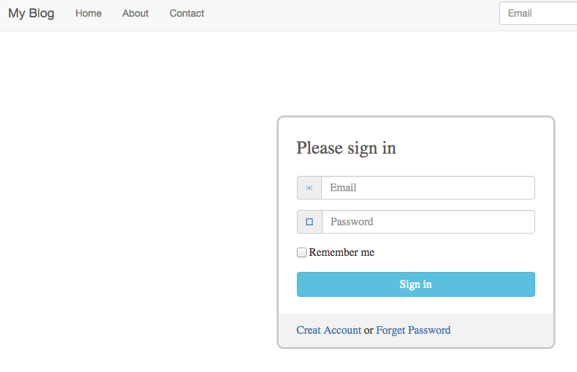
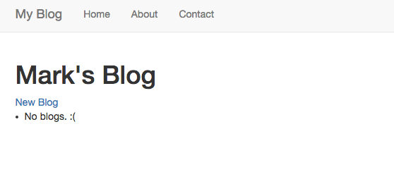
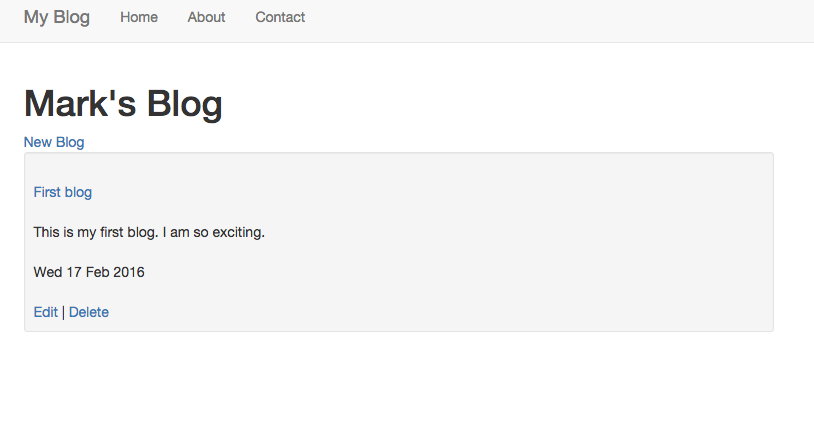
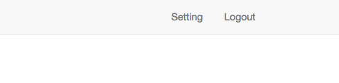

A Blog web application
This is a Blog web application implemented by Django. Django is a full-stack Python Wed framework. "full-stack" means that it combines front-end and back-end together and allows web application more modular. This application has features such as sign up, email activation, login, logout, write blog, edit and delete blog.
Run Blog web application on local machine
Download the web calendar and enter the CalendarDjango folder. Make sure you have installed Python and Django. Then type command:
python manage.py runserver
Well done! The server is running now. You can type 127.0.0.1:8000 on you web browser (Chrome, Firfox or others).
The web will show a login/sign up page:
Click on
Creat Account, you will sign up page. Type the information and a email with activation link will send to you. After activation, you can login.

When login succeed, you will see you personal blog page, nothing here:
You can add a new blog by click
New Blog. The blog page will like this after you add a blog:

There areEditandDeletebuttons which are used for editing and delete blog.There are
SettingandLogoutbuttons at the top-right corner.

In setting page, you can set your information such as name and password. If you click onlogoutbutton, yes, you will log out and return to the login/sign up page.The information of registration and blogs are stored in SQL database in the
BlogDjangofolder.